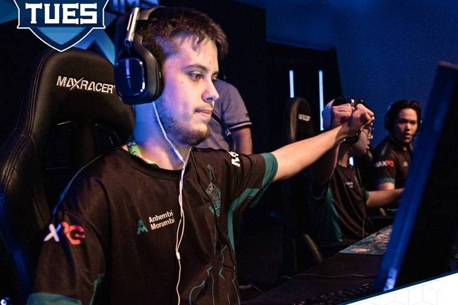
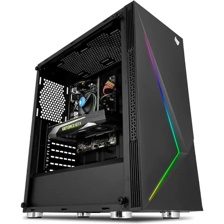

O presidente Jair Bolsonaro falou hoje (25), durante live semanal no Facebook, que pretende extinguir a Agência Nacional do Cinema (Ancine).
Ele vem, desde a semana passada, citando que a agência fomenta, com dinheiro público, obras cinematográficas que atentam contra a
família, e voltou a citar o caso do filme Bruna Surfistinha, lançado em 2011.

Em um torneio MD3, o time levou 2x0. A Anehmbi escolheu o primeiro mapa, "Litoral", e começou em vantagem, vencendo as duas primeiras rodadas.
O Capybaras conseguiu chegar perto, mas não venceu a partida. Osegundo mapa foi "Bomba, escolha de Capybaras, também vencido pela Anhembi
"Nós viemos do nada e trabalhamos duro por por meses. Foi bem disputado, achávamos que seria difícil. Agora é
só comemorar", disse o time.
"Quando formamos a equipe, não imaginávamos que chegaríamos na final de primeira.
A maioria aqui é do primeiro semestre, a galera acabou de entrar na faculdade
e tem a experiência de ganhar assim, logo de cara".

AMD Ryzen 7 2700 têm multiplicador de clock desbloqueado.Tecnologia Simultaneous Multi-Threading
apresenta 8 núcleos e 16 threads com frequência de 3.2Ghz a 4.1Ghz
placa de vídeo MSI RADEON RX 570 4GB GDDR5 ARMOR OC é a grande responsável por trazer fluidez aos games
mais pesados, principalmente em altas resoluções e com os efeitos visuais habilitados.
Chipset A320 com suporte a 32gb de RAM DDR4 com freqüência de 3200Mhz,suporte a para a RAID 0, RAID 1 e
RAID 10. USB 3.1 Gen1
compre clicando no link abaixo: